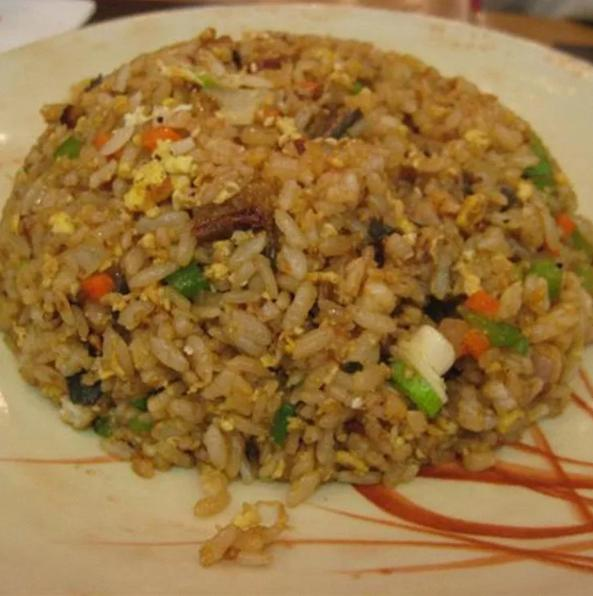

Fried Rice

Description
Simple to make Japanese-style Fried Rice for all!
List of Ingredients
- 2 cups jasmine rice
- 2 cups chicken stock
- 1 1/2 cups of water
- 4 tablespoons butter, divided, or more to taste
- 2 large eggs, beaten
- 2 tablespoons vegetable oil
- 3 tablespoons sesame seeds, or to taste
- 2 tablespoons soy sauce, or to taste
- 1/8 teaspoon salt
- 1/8 teaspoon ground black pepper
Steps
- Place rice, chicken stock, and water in a medium saucepan; bring to a boil.
- Reduce heat to low, cover, and simmer until tender and liquid has been absorbed, for 15 to 20 minutes.
- Remove from the heat, stir in 2 tablespoons butter, and let cool to room temperature, for about 30 minutes.
- Heat vegetable oil in a skillet over medium heat. Add eggs and scramble, stirring often to chop chunks of egg into small bits with a spatula.
- Place rice in a large mixing bowl, add eggs, and toss together.
- Melt remaining 2 tablespoons butter in a large frying pan over medium-high heat. Dump rice mixture into the hot pan.
- Add sesame seeds, 2 tablespoons soy sauce, salt, and pepper. Cook, stirring often, for 8 minutes.
- Taste and add more butter or soy sauce as desired. Serve.